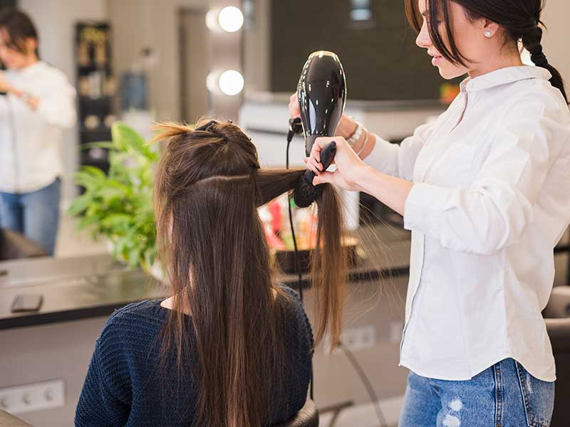
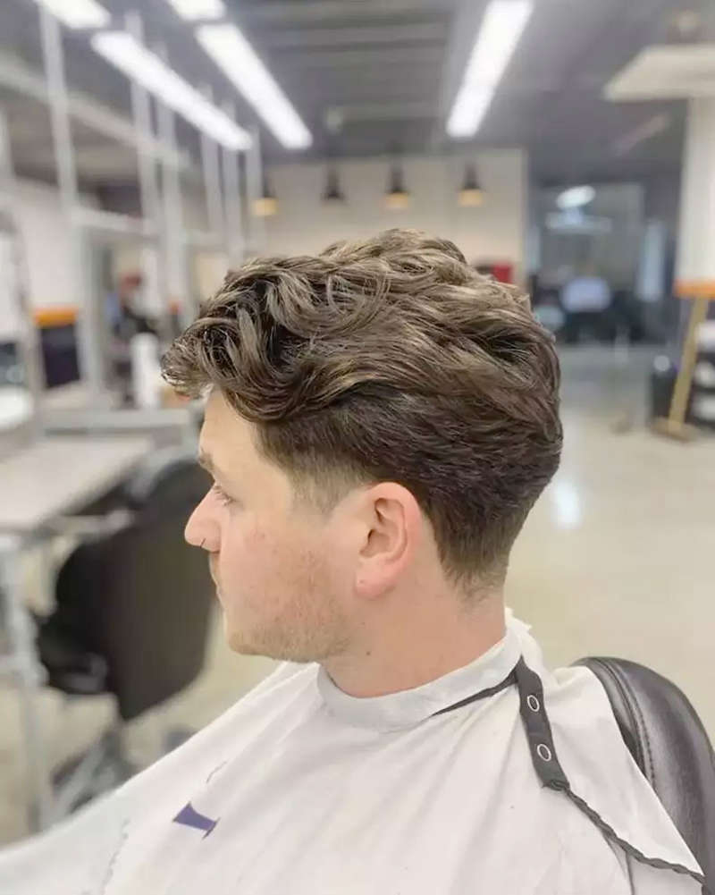
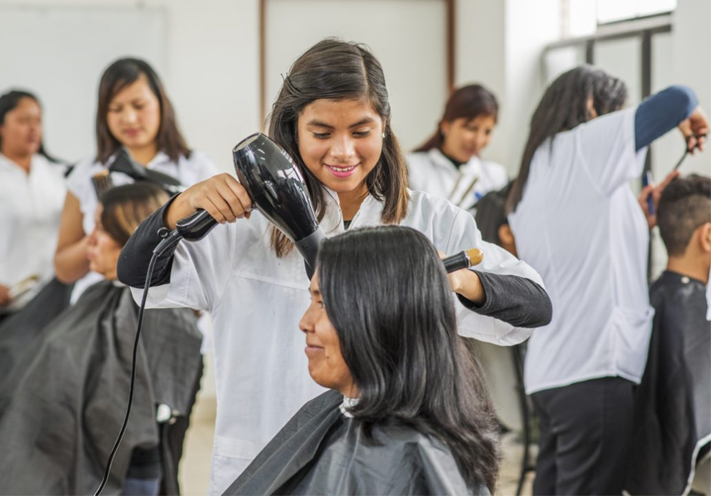

| Peluquería Básica | |
| Ondulación Permanente: |  |
| Técnicas de ondulación capilar directa e indirecta. | |
| Diseño de Mechas: | |
| Balayage, baby light y mechas de fantasía. | |
| Corte de Cabello para Damas: |  |
| Corte sólido, escalonado, bod y degrafilados. | |
| Corte de Cabello para Caballeros: | |
| Corte con tijera, máquina, escolar, militar, barbería básica, técnicas de Fade y Técnicas de Snik Fade, | |
| Tinturación Capilar: |  |
| Mechas de fantasía, técnicas de balayage y técnicas de baby light. | |